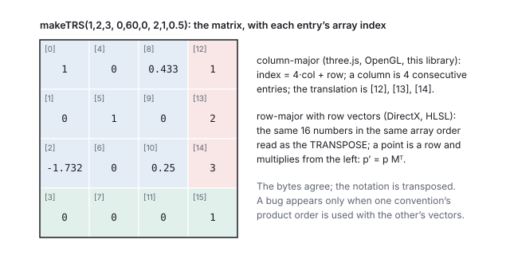
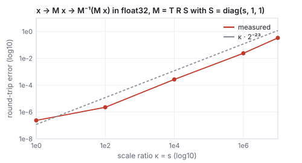
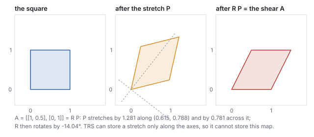

This chapter links to the course’s interactive demos and uses MathJax for its formulas. Read it through the course website (or download the file and open it in a browser); a Canvas inline preview will reach neither the demos nor the math. All chapters.
Affine Transformations over Homogeneous Coordinates
To place a model in a scene you translate, rotate, scale and sometimes shear it, in some order, and then undo those operations for picking and for cameras. All of these are one kind of map, an affine map: a linear part and a shift. This chapter names the family and what it preserves, lifts it into homogeneous coordinates so that the whole family becomes a single \(4\times4\) matrix, and then derives from two block formulas everything the pipeline needs: why composition order matters, the inverse and how well conditioned it is, a matrix read as a coordinate frame and the same matrix read backward as a change of coordinates, the TRS decomposition engines store and the polar decomposition that explains what it leaves out, the rule for transforming normals and planes, pivots and conjugation, and finally the boundary of the family, where the perspective matrix leaves it. It also settles the question that costs more debugging time than any other in this subject, which way round the sixteen numbers are stored. Every number is computed by the course’s own transform library.
- Affine maps and what they preserve
- Homogeneous coordinates: the lift
- Composition, and why order matters
- The inverse, and its conditioning
- A matrix is a frame; object and world space
- TRS, the polar decomposition, and the shear it cannot store
- Normals and planes transform by the inverse transpose
- Pivots and conjugation
- Where affine ends
- In code
- Exercises
1 · Affine maps and what they preserve
| map | \(A\) | \(\mathbf{t}\) |
|---|---|---|
| translation by \(\mathbf{t}\) | \(I\) | \(\mathbf{t}\) |
| rotation \(R\) about the origin | \(R\) | \(0\) |
| scale by \((s_x, s_y, s_z)\) | \(\mathrm{diag}(s_x, s_y, s_z)\) | \(0\) |
| shear \(x' = x + k\,y\) | \(\begin{pmatrix} 1 & k & 0 \\ 0 & 1 & 0 \\ 0 & 0 & 1\end{pmatrix}\) | \(0\) |
| any composition of these | a product of the \(A\)’s | some vector (Section 3) |
![The unit square in blue and its image under the shear A = [[1, 0.5],[0,1]] in red, a parallelogram; the diagonal's midpoint at (0.5, 0.5) maps to (0.75, 0.5), the midpoint of the image diagonal; horizontal grid lines stay parallel.](figures/aff-shear.svg)
1.1 The determinant: volume and handedness
\(\det A\) is the factor by which \(A\) scales volume (the scalar triple product of its columns, the vectors chapter, Section 3.2), and its sign says whether handedness flipped. Computed by the library:
| \(A\) | \(\det A\) | meaning |
|---|---|---|
| \(\mathrm{diag}(2, 1, 1)\) | \(2\) | twice the volume |
| \(R_y(60^\circ)\) | \(1\) | a rotation keeps volume and handedness |
| \(\mathrm{diag}(-1, 1, 1)\) | \(-1\) | a mirror: same volume, right hand to left hand |
| the shear above | \(1\) | area kept, shape not |
| a zero scale | \(0\) | a dimension collapsed; no inverse |
1.2 Points move; displacements do not
\[ f(\mathbf{p}) - f(\mathbf{q}) = (A\mathbf{p} + \mathbf{t}) - (A\mathbf{q} + \mathbf{t}) = A\,(\mathbf{p} - \mathbf{q}). \]
A position is a place and moves with the world; a direction has no place and must not move when the world is shifted. Section 2 makes the matrix enforce this automatically.
2 · Homogeneous coordinates: the lift
Append a \(1\) to every point, \((x, y, z)\mapsto(x, y, z, 1)\), and pack \(A\) and \(\mathbf{t}\) into one \(4\times4\) matrix:

This is the entire engineering reason for \(4\times4\) matrices in graphics: translation, rotation, scale and shear become one data type with one multiply, one inverse, and one upload to the GPU. The \(w\) arithmetic is a pleasant type check: point minus point gives \(w = 0\), a vector; point plus vector gives \(w = 1\), a point.
2.1 Sixteen numbers, two conventions
A \(4\times4\) matrix is sixteen numbers in memory, and two decisions turn them into a matrix: whether consecutive numbers run down a column or along a row (column-major or row-major storage), and whether a point is a column that the matrix multiplies from the left, \(\mathbf{p}' = M\mathbf{p}\), or a row that multiplies the matrix from the right, \(\mathbf{p}' = \mathbf{p}M\) (column-vector or row-vector convention). The mathematics is identical, since \((M\mathbf{p})^{\mathsf T} = \mathbf{p}^{\mathsf T}M^{\mathsf T}\); the bookkeeping is not.

| system | vectors | storage | “rotate then translate” is written | translation lives at |
|---|---|---|---|---|
OpenGL, three.js, this library, Unity’s Matrix4x4 | column | column-major | \(T\cdot R\) | indices 12, 13, 14 (the last column) |
| DirectX, HLSL by default, Unreal | row | row-major | \(R\cdot T\) | indices 12, 13, 14 (the last row) |
| textbooks, this text | column | as printed | \(T\cdot R\) | the last column |
invertTRS refuses such a
matrix with an explicit message rather than inverting it wrongly. Composition order errors
are the milder cousin: writing \(R\cdot T\) where \(T\cdot R\) was meant puts the object on an
arc instead of at its position, which Section 3 shows.
3 · Composition, and why order matters
Do \(f(\mathbf{x}) = A\mathbf{x} + \mathbf{t}\), then \(g(\mathbf{x}) = B\mathbf{x} + \mathbf{s}\):
\[ g(f(\mathbf{x})) = B(A\mathbf{x} + \mathbf{t}) + \mathbf{s} = (BA)\,\mathbf{x} + (B\mathbf{t} + \mathbf{s}). \]On column vectors, the matrix nearest the vector acts first, so a product \(B\cdot A\) means “\(A\) first, then \(B\)” and is read right to left, the same convention as the quaternion product in the rotation chapter. A chain of placements, an arm on a base on a table, is a product of several such matrices, and the scene-graph chapter is this formula applied down a tree.
| \(T\cdot R\) | second map \(T\): \(B = I\), \(\mathbf{s} = \mathbf{t}\); first map \(R\): \(A = R\), translation \(0\). Linear part \(R\); translation \(I\cdot 0 + \mathbf{t} = (1.5, 0, 0)\). |
| \(R\cdot T\) | second map \(R\): \(B = R\), \(\mathbf{s} = 0\); first map \(T\): \(A = I\), translation \(\mathbf{t}\). Linear part \(R\); translation \(R\,\mathbf{t} = (1.5\cos60^\circ, 0, -1.5\sin60^\circ) = (0.75, 0, -1.299)\). |
matMul(makeTRS(…), makeTRS(…)), and they are what the demo’s panels print.

4 · The inverse, and its conditioning
Solve \(\mathbf{y} = A\mathbf{x} + \mathbf{t}\) for \(\mathbf{x}\): \(\mathbf{x} = A^{-1}\mathbf{y} - A^{-1}\mathbf{t}\).
invertTRS assembles.
The reversal rule for products is the socks-then-shoes rule: to undo, take the shoes off first. The two uses that matter most: bringing a world point into an object’s own frame for a hit test (Section 5), and the view matrix, which is the inverse of the camera’s placement (the viewing chapter).
invertTRS returns exactly this matrix, and
\(M\cdot M^{-1}\) evaluates to the identity in every entry.
4.1 Conditioning: how much precision the inverse costs
An inverse exists whenever \(\det A \ne 0\), but existing and being computable in single precision are different things. The condition number \(\kappa(A)\), the ratio of the largest to the smallest stretch \(A\) applies to any direction, bounds how much a relative error in the input grows in the output: a round trip \(\mathbf{x}\to M\mathbf{x}\to M^{-1}(M\mathbf{x})\) in arithmetic with relative precision \(\varepsilon\) returns \(\mathbf{x}\) only to about \(\kappa\,\varepsilon\). For a rotation \(\kappa = 1\); for \(\mathrm{diag}(s, 1, 1)\), \(\kappa = s\).

| scale ratio \(s = \kappa\) | 1 | \(10^2\) | \(10^4\) | \(10^6\) | \(10^7\) |
|---|---|---|---|---|---|
| round-trip error of \((1,1,1)\) | \(2.4\times10^{-7}\) | \(2.3\times10^{-6}\) | \(2.7\times10^{-4}\) | \(2.4\times10^{-2}\) | \(0.34\) |
| \(\kappa\cdot2^{-23}\) | \(1.2\times10^{-7}\) | \(1.2\times10^{-5}\) | \(1.2\times10^{-3}\) | \(0.12\) | \(1.2\) |
5 · A matrix is a frame; object and world space
Feed the matrix the basis vectors and the origin, in homogeneous form:
\[ M\,(1,0,0,0)^{\mathsf T} = \text{column 0}, \quad M\,(0,1,0,0)^{\mathsf T} = \text{column 1}, \quad M\,(0,0,1,0)^{\mathsf T} = \text{column 2}, \quad M\,(0,0,0,1)^{\mathsf T} = \text{column 3}. \]
Every object has its own frame, the one its mesh was authored in (a cube’s corners at
\(\pm\tfrac12\), forever). The model matrix \(M\) is the bridge:
\(\mathbf{p}_{\text{world}} = M\,\mathbf{p}_{\text{object}}\) places the mesh without touching its
vertices, and \(\mathbf{p}_{\text{object}} = M^{-1}\mathbf{p}_{\text{world}}\) brings a world point (a
mouse ray’s hit, another object’s position) into the object’s frame for tests like
“is this point inside me”. In Unity, transform.localPosition lives in the
parent’s frame and transform.position in the world; the difference is exactly the
parent chain, which the scene-graph chapter composes
and inverts.
5.1 Active and passive: one matrix, two readings
The same matrix answers two questions. Read actively, \(M\) moves the object: the cube’s corner at object \((\tfrac12, \tfrac12)\) is carried to world \((1.9, 1.808)\). Read passively, \(M\) changes coordinates: the world point \((1.9, 1.808)\), which never moved, has coordinates \((\tfrac12, \tfrac12)\) when measured along the object’s axes from the object’s origin, and \(M^{-1}\) is the map that measures. When the columns are orthonormal the passive reading is the dot-product recipe of the vectors chapter, Section 1.1; when they are not, it is a linear solve, which the inverse packages.
6 · TRS, the polar decomposition, and the shear it cannot store
Any invertible \(A\) factors as a rotation times a symmetric stretch, \(A = R\,P\) (the polar decomposition, Section 6.1). Engines store the special case in which the stretch is axis-aligned:
\[ M = T\cdot R\cdot S, \qquad \text{columns 0 to 2} = \text{the rotated axes, each scaled by its factor}, \quad \text{column 3} = \mathbf{t}. \]makeTRS(1,2,3, 0,60,0, 2,1,0.5) is
\[
M = \begin{pmatrix} 1 & 0 & 0.433 & 1 \\ 0 & 1 & 0 & 2 \\ -1.732 & 0 & 0.25 & 3 \\ 0 & 0 & 0 & 1 \end{pmatrix}.
\]
Column lengths: \(\|(1, 0, -1.732)\| = 2\), \(\|(0,1,0)\| = 1\), \(\|(0.433, 0, 0.25)\| = 0.5\): the
scale \((2, 1, 0.5)\). Normalize the columns: \((0.5, 0, -0.866)\), \((0,1,0)\), \((0.866, 0, 0.5)\),
the columns of \(R_y(60^\circ)\). Column 3 is \((1, 2, 3)\). This read-back is the first step of
invertTRS, and it silently assumes the normalized columns are orthonormal.
An affine map has twelve degrees of freedom (nine in \(A\), three in \(\mathbf{t}\)). A
Transform stores nine: position, a rotation (three degrees of freedom, as a quaternion), and
three scale factors. The missing three are shear: \(T\cdot R\cdot S\) cannot
represent a sheared object. This is not academic. A child rotated \(45^\circ\) under a parent
scaled non-uniformly is sheared in world space; Unity’s Transform cannot hold that
matrix, and its lossyScale property is the honest admission that the world-space scale
it reports is an approximation.
6.1 The polar decomposition

6.2 What the read-back does to a shear
The stretch need not come from a shear matrix. Scaling by 2 along the diagonal \((1, 1, 0)/\sqrt2\), the conjugation \(R_z(45^\circ)\,\mathrm{diag}(2, 1, 1)\,R_z(-45^\circ)\) of Section 8, is a symmetric matrix with no rotation at all, and TRS cannot hold it either:
invertTRS makes of it)
\(M = \begin{pmatrix} 1.5 & 0.5 & 0 \\ 0.5 & 1.5 & 0 \\ 0 & 0 & 1 \end{pmatrix}\): \(M(1, 1, 0) = (2, 2, 0)\)
(stretched twice along the diagonal) and \(M(1, -1, 0) = (1, -1, 0)\) (unchanged across it),
\(\det M = 2\). Its first two columns have length \(1.581\) each and dot product \(1.5\), an angle
of \(53.1^\circ\), not \(90^\circ\). The TRS read-back reports scale \((1.581, 1.581, 1)\) and a
“rotation” whose columns are not orthogonal, and invertTRS, which trusts
the read-back, returns a matrix whose first column is \((0.6, 0.2, 0)\) where the true inverse
has \((0.75, -0.25, 0)\); \(M\) times that answer has \(0.6\) in an entry that should be 0.
The shear of Section 6.1 fails the same way: its columns have lengths \(1\) and \(1.118\) and meet at
\(63.4^\circ\).
7 · Normals and planes transform by the inverse transpose
A tangent direction \(\mathbf{d}\) is a difference of points and transforms by \(A\). A normal is defined by being perpendicular to tangents, and \(A\mathbf{n}\) is not, in general, perpendicular to \(A\mathbf{d}\). What is: \(A^{-\mathsf T}\mathbf{n}\), because \((A\mathbf{d})\cdot(A^{-\mathsf T}\mathbf{n}) = \mathbf{d}^{\mathsf T}A^{\mathsf T}A^{-\mathsf T}\mathbf{n} = \mathbf{d}\cdot\mathbf{n} = 0\).

| tangent after | \(A\mathbf{d} = (2, 1, 0)\) |
| naive | \(A\mathbf{n} = (1.414, -0.707, 0)\); \((2,1,0)\cdot(1.414, -0.707, 0) = 2.828 - 0.707 = 2.121 \ne 0\) |
| inverse transpose | \(A^{-\mathsf T} = \mathrm{diag}(\tfrac12, 1, 1)\); \(A^{-\mathsf T}\mathbf{n} = (0.354, -0.707, 0)\); \((2,1,0)\cdot(0.354, -0.707, 0) = 0.707 - 0.707 = 0\) |
7.1 Planes
A plane is a normal and an offset, and the two travel together. Write the plane \(\hat{\mathbf{n}}\cdot P = D\) of the vectors chapter as the homogeneous row \(\boldsymbol\pi = (n_x, n_y, n_z, -D)\), so that a point is on the plane exactly when \(\boldsymbol\pi\cdot(x, y, z, 1) = 0\). If points move by \(M\), the plane through their images must satisfy \(\boldsymbol\pi'\cdot(M\tilde{\mathbf{p}}) = 0\) whenever \(\boldsymbol\pi\cdot\tilde{\mathbf{p}} = 0\), which holds for \(\boldsymbol\pi' = M^{-\mathsf T}\boldsymbol\pi\): the full \(4\times4\) inverse transpose, which moves the offset as well as tilting the normal. Renormalize the first three components afterward and \(-\boldsymbol\pi'_3\) is the new \(D\).
makeTRS(1,2,3, 0,60,0, 2,1,0.5).
\(M^{-\mathsf T}\boldsymbol\pi = (1.238, 0.667, 0.522, -4.472)\), normalized on its first three components to
\((0.825, 0.444, 0.348, -2.981)\): the new normal is \((0.825, 0.444, 0.348)\) and the new offset
\(D' = 2.981\). Check on two points known to be on the old plane, \(Q = (1, 0, 0)\) and the foot
\((3.444, -0.111, -1.111)\): their images \(M Q = (2, 2, 1.268)\) and \((3.963, 1.889, -3.243)\) both
satisfy \(\hat{\mathbf{n}}'\cdot P - D' = 0\) to six decimals. The naive normal \(A\hat{\mathbf{n}}\),
normalized to \((0.622, 0.667, -0.411)\), fails: the two image points differ by \(3.0\) in
their “signed distance” from a plane that should contain both. Clipping planes,
mirrors and shadow-caster planes all move this way.
8 · Pivots and conjugation
\(R\) spins about the origin. To spin about a point \(\mathbf{p}\), bring \(\mathbf{p}\) to the origin, rotate, and send it back, and apply the block product of Section 3:
\[ M = T(\mathbf{p})\cdot R\cdot T(-\mathbf{p}) \;=\; \begin{pmatrix} R & \mathbf{p} - R\mathbf{p} \\ \mathbf{0}^{\mathsf T} & 1 \end{pmatrix} = \begin{pmatrix} R & (I - R)\,\mathbf{p} \\ \mathbf{0}^{\mathsf T} & 1 \end{pmatrix}. \]\(\mathbf{p}\) is the fixed point: \(T(-\mathbf{p})\) sends it to the origin, \(R\) leaves the origin, \(T(\mathbf{p})\) returns it. Swap \(R\) for \(S\) to scale about a point. Every off-center rotation, joint articulation and scale-about-a-corner is this conjugation, and the translation column \((I - R)\mathbf{p}\) is a number nobody would enter by hand, which is why the sandwich is built rather than typed.

9 · Where affine ends
Homogeneous coordinates are defined only up to scale: \((x, y, z, w)\) and \((\lambda x, \lambda y, \lambda z, \lambda w)\) name the same point, \((x/w, y/w, z/w)\). An affine matrix never changes \(w\), so the divide is invisible. A general \(4\times4\) whose last row is not \((0,0,0,1)\) does change it, and the map it defines after the divide is projective: lines still go to lines, but parallel lines can meet and ratios along a line are not kept.

| in | \(w\) | out |
|---|---|---|
| \((1, 0)\) | 1 | \((1, 0)\) |
| \((1, 1)\) | 1.5 | \((0.667, 0.667)\) |
| \((1, 2)\) | 2 | \((0.5, 1)\) |
Three consequences. The perspective projection of the
viewing chapter deliberately writes \(-z\) into \(w\), so that dividing by \(w\) divides by
depth and distant things shrink; it is the one non-affine matrix in the pipeline, and the
divide by \(w\) is its signature. A vector with \(w = 0\) is, in this language, a point at
infinity: a direction is where parallel lines meet, which is why directions never move
under translation. And the library’s invertTRS refuses a matrix whose last row is
not \((0,0,0,1)\), because the block inverse of Section 4 only holds inside the affine family;
the interaction chapter inverts the full projective
matrix by elimination to send a mouse position back into the world.
10 · In code
css551/ directory. Matrices print as their 16-element
column-major arrays: four numbers per column, translation last.
- The TRS matrix of Section 6 and its storage (compare with the figure of Section 2.1):
node -e "import('./lib/core/xform.js').then(x=>{console.log(x.makeTRS(1,2,3,0,60,0,2,1,0.5).map(v=>+v.toFixed(3)));})" [ 1, 0, -1.732, 0, 0, 1, 0, 0, 0.433, 0, 0.25, 0, 1, 2, 3, 1 ] - The translation columns of \(T\cdot R\) and \(R\cdot T\) (Section 3):
node -e "import('./lib/core/xform.js').then(x=>{const T=x.makeTRS(1.5,0,0,0,0,0,1,1,1),R=x.makeTRS(0,0,0,0,60,0,1,1,1);console.log(x.matMul(T,R).slice(12,15).map(v=>+v.toFixed(3)), x.matMul(R,T).slice(12,15).map(v=>+v.toFixed(3)));})" [ 1.5, 0, 0 ] [ 0.75, 0, -1.299 ] - A round trip through a TRS matrix and its inverse (in double precision; Section 4.1 measures the float32 version):
node -e "import('./lib/core/xform.js').then(x=>{const M=x.makeTRS(1,2,3,30,60,10,2,1,0.5);const p=x.applyMat4(M,[1,1,1]);console.log(x.applyMat4(x.invertTRS(M),p.slice(0,3)).slice(0,3).map(v=>+v.toFixed(6)));})" [ 1, 1, 1 ] - The refusal on a projective matrix (Section 9):
node -e "import('./lib/core/xform.js').then(x=>{try{x.invertTRS(x.perspective(45,1.78,1,8))}catch(e){console.log(e.message)}})" invertTRS: bottom row must be (0,0,0,1) ... Got a perspective/shear-shaped bottom row. - The silent failure on an oblique scale (Section 6.2): the call succeeds and the first column of its answer is wrong:
node -e "import('./lib/core/xform.js').then(x=>{const Rd=x.axisAngleMatrix(0,0,1,45),S=x.makeTRS(0,0,0,0,0,0,2,1,1);const M=x.matMul(x.matMul(Rd,S),x.invertTRS(Rd));console.log(x.invertTRS(M).slice(0,3).map(v=>+v.toFixed(3)));})" [ 0.6, 0.2, 0 ] - In the order demo, set the rotation to \(180^\circ\) with the translation at \(1.5\): the \(R\cdot T\) cube lands at \(x = -1.5\), the \(T\cdot R\) cube at \(+1.5\), the widest the two orders can disagree.
11 · Exercises
Solution
\(T\cdot S\): \(B = I\), so the column is \(I\cdot0 + (1,0,0) = (1,0,0)\); the origin lands at \((1,0,0)\). \(S\cdot T\): \(B = 2I\), column \(2I\cdot(1,0,0) + 0 = (2, 0, 0)\); the origin lands at \((2,0,0)\). Scaling after translating scales the translation too.Solution
\(R_z(90^\circ)\) has columns \((0,1,0), (-1,0,0), (0,0,1)\); \(R^{\mathsf T}\mathbf{t} = \big((0,1,0)\cdot(0,3,0),\; (-1,0,0)\cdot(0,3,0),\; 0\big) = (3, 0, 0)\), so the inverse has linear part \(R^{\mathsf T}\) and translation \((-3, 0, 0)\). Forward: \(M(1,0,0) = R(1,0,0) + \mathbf{t} = (0,1,0) + (0,3,0) = (0,4,0)\). Back: \(R^{\mathsf T}(0,4,0) + (-3,0,0) = (4, 0, 0) + (-3, 0, 0) = (1, 0, 0)\).Solution
Position \((5,5,5)\); scale \((2, 3, 1)\) from the column lengths; normalized columns \((0,1,0), (-1,0,0), (0,0,1)\) are \(R_z(90^\circ)\). Determinant of the normalized part is \(+1\) (a rotation), so right-handed; with the scale, \(\det = 6 > 0\).Solution
\(A^{-\mathsf T} = \mathrm{diag}(1, 1, \tfrac13)\): \((0, 0.707, 0.236)\), renormalized \((0, 0.949, 0.316)\). Stretching along \(z\) makes the surface flatter, so its normal tilts toward \(y\), away from the stretch; the naive \(A\mathbf{n} = (0, 0.707, 2.121)\) tilts the wrong way.Solution
Linear part \(2I\); translation \((I - 2I)\mathbf{p} = -\mathbf{p} = (-1, -1, 0)\). \(M(1,1,0) = (2,2,0) + (-1,-1,0) = (1,1,0)\), fixed. \(M(2,1,0) = (4,2,0) + (-1,-1,0) = (3,1,0)\): the point one unit right of the pivot is now two units right.Solution
\(w = 1 + 3 = 4\): \((0.25, 1.5)\). As \(y\to\infty\), \(x/(1 + 0.5y)\to0\) and \(y/(1 + 0.5y)\to 2\): the line approaches \((0, 2)\), the vanishing point shared by every vertical line.Solution
Index \(4\cdot0 + 2 = 2\), value \(-1.732\) (the \(-\sin 60^\circ\) of \(R_y\), times the scale 2). The row-vector system stores the transpose row-major, which is the same sixteen numbers in the same order, so \(t_y\) is again at index 13; only the reading changes.Solution
\((1.5, 1)\) is the frame’s origin, column 3: object \((0, 0)\). \((2.799, 1.75) - (1.5, 1) = (1.299, 0.75) = \mathbf{c}_0\): object \((1, 0)\), the far end of the object’s stretched \(x\) axis. Recognizing a column saves the solve; for any other point the inverse of the worked example does it.axisAngleMatrix, makeTRS and matMul, print the dot product of its first two columns, and explain the number.
Solution
node -e "import('./lib/core/xform.js').then(x=>{const R=x.axisAngleMatrix(0,0,1,30),S=x.makeTRS(0,0,0,0,0,0,3,1,1);const M=x.matMul(x.matMul(R,S),x.invertTRS(R));console.log(x.dot([M[0],M[1],M[2]],[M[4],M[5],M[6]]).toFixed(4));})" prints 3.4641. The matrix is symmetric, \(\begin{pmatrix} 2.5 & 0.866 \\ 0.866 & 1.5 \end{pmatrix}\) in its \(xy\) block, and \(2.5\cdot0.866 + 0.866\cdot1.5 = 3.464\) is far from the 0 of orthogonal columns: a stretch along a tilted axis is not a TRS matrix, and the read-back would report a scale of \(2.65\) and \(1.73\) with a bogus rotation.